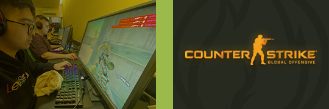

| Sobre a ECHO
| Sobre a ECHO
A ECHO é uma empresa de esportes eletrônicos, ou eSports, com atuação nacional e pretensões globais, fundada em 2020 em Minas Gerais, Belo Horizonte, que disputa campeonatos de Counter-Strike:Global Offensive.
O Counter Strike:GO é a popular continuação do famoso jogo Counter-Strike 1.6. Os maiores campeonatos de CS contam com milhões de expectadores e premiações milionárias.
A ECHO disputa campeonatos como a Liga Desafiante da Gamers Club, que é disputado por 32 dos melhores times do Brasil, assim como a partir de 2021 disputara a CBCS, o maior campeonato do Brasil, que conta com os 16 melhores times.
A equipe de CS:GO da ECHO conta com 5 jogadores, sendo dois mais experientes, que já disputaram diversos campeonatos e três das maiores promessas do Counter-Strike brasileiro. Além disso a equipe também conta com um técnico, que auxilia nos treinamentos, na criação de jogadas, na preparação contra os adversários e na análise das partidas anteriores. Os jogadores da ECHO são extremamente dedicados e tem um único objetivo: ser o melhor time do mundo.
Toda essa dedicação já nos rendeu vários frutos, como a classificação para o circuito CBCS. A ECHO já participou de grandes campeonatos como a Razer Invitational, aonde chegou na grande final que foi transmitida pelos principais nomes do cenário como os streamers Gaules e Fallen. A final teve duração de 4 horas e uma média de espectadores simultâneos de mais de 30 mil pessoas, além de mais de 100 mil visualizações totais.
A ECHO pretende firmar parcerias com patrocinadores que tenham interesse em ajudar a financiar um projeto que envolve pessoas extremamente dedicadas, e com grandes objetivos, para que no futuro todas as partes possam colher os frutos dessa jornada.
Venha para o futuro dos esportes e seja nosso parceiro!
 -Pedro Antunes, CEO